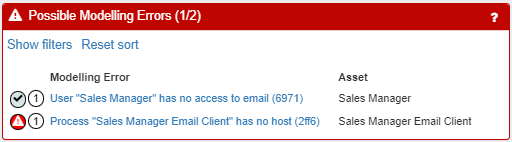
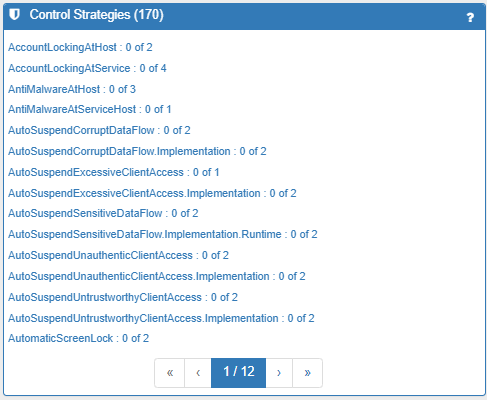
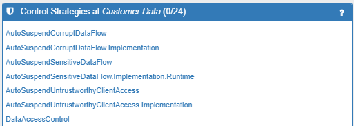

Reference Guide
Entries can be accessed by clicking the ? icon at any time.
Asset Palette
Lists the available assets (the ‘objects’ in your system) that can be drag-andn-dropped onto the modelling canvas as nodes in your network. Assets can be conceived as being grouped into three broad areas:
- The Application Layer (data and processes) – see Data / Process
- The Network Layer (sensors, IOT, devices and network connections) – see Host / Network Asset
- The Physical Layer (spaces, places, people and jurisdictions) – see Governance Asset / Space / Stakeholder
The specific Assets depend on the knowledgebase you are using and each one has a tooltip describing it. The assets may include:
Data
- Biometric Data: a data item or set that contains biometric measurements relating to individuals, and is subject to GDPR Article 9
- Data: a data item or set that can be stored, transmitted by a host, or processed by a host
- Genetic Data: a data item or set that contains genetic information relating to individuals, and is subject to GDPR Article 9
- Health Data: a data item or set that contains health information relating to individuals, and is subject to GDPR Article 9
- Sensitive Data: a type of data whose compromise has a higher impact than other types of data
- Special Category Data: a data item or set which if compromised has a higher impact than other types of data. If this data relates to a human, it is special category data as defined by GDPR Article 9
Governance Asset
- Jurisdiction: a specific set of regulations that part or all of the system may be subject to (e.g. EU laws such as GDPR, or National laws)
Host
- Controller: a Thing which can affect the physical environment in ways defined by the data sent to it
- Notebook: a mobile physical host such as a laptop use to run application processes locally (including client processes for accessing services over a network)
- Router: a simple fixed device used to transmit and receive data between locally connected subnets
- Sensor: a Thing that can sense its physical environment and produce data to describe it
- Server: a fixed physical host used to run application processes that are accessed remotely over a network
- Smartphone: a mobile physical host used to run applications that act as clients for accessing services over a network
- Tablet: a mobile physical host used to run applications, some of which run locally, but most act as clients for accessing services over a network
- VM (Virtual Machine): a virtualised host provisioned at a data centre, with an allocated fraction of the underlying physical hardware capacity, and able to host arbitrary applications and data
- VRouter: a very simple virtual device used to transmit and receive data between different locally connected (possibly virtual) subnets
- Workstation: a fixed physical host such as a PC used to run application processes locally (including client processes for accessing services over a network)
Network
- Cluster IP: a subnet implemented by Kubernetes
- Internet: represents access and core networks between other subnets (special type of Logical Subnet)
- Private Cellular Network: a private mobile phone network
- Public Cellular Network: a public mobile phone network
- VLAN: a locally connected network in which connections between hosts are provided by another Logical Subnet which carries the VLAN's communications packets
- WiFi LAN: a locally connected network that uses radio communication
- wired LAN: a locally connected network in which connections between hosts are provided by physical wires
Process
- ApplicationProcess: a generic process with significant complexity unable to run on a specialised device
- DB (Database): a process that allows data to be stored and accessed using a well known query language
- Email Client: an ESMTP Mail User Agent (MUA) process
- Web Client: an HTTP client process used to access online applications and to navigate the Web
Space
- Bounded Space: a public space with a boundary so it can be feasibly checked or inspected
- Data Centre: a building or buildings containing physical hosts and networks used to support virtualised hosts and networks
- Private Space: a physical space with secure and/or restricted access
- Public Space: a physical space that anyone can access without restriction
Stakeholder
- Adult: a human legally able to provide consent for participation in an IT-based system
- Child: a human below the age of legal consent for participation in an IT-based system
- Human: a generic individual user role that uses and/or manages assets
- Legal Organisation: a group working together in pursuit of goals constituted as a legal entity
- Organisation: a group working together in pursuit of goals
Model Details
Provides a top-level description of the model and provides a link to the Model Report.
.png)
Model Possible Modelling Errors
Lists possible modelling errors that should be investigated. It is not always possible to tell if something is an error or not but it is worth looking through the list of possible errors. Clicking on a modelling error opens a panel that explains the error in detail and suggests how to fix it. Sometimes the fix can be as simple as telling the software to ignore the error.

Model Assets
List of all the assets in your model, including "inferred assets" which are automatically added by the software (and which are enclosed in square brackets).
.png)
Model Controls
Lists the relevant security controls that SSM has identified for your system and allows you to apply them across multiple assets.
.png)
Model Control Strategies
Lists all the Control Strategies available to apply to the model and allows then to be explored and applied.

Model Consequences and Impacts
List of all the Consequences that SSM has identified as possible and the asset to which the Consequence relates. Consequence are caused by Threats.
By drawing on the Domain Model containing a vast array of known Threats and Consequence, this provides a rating of the Impact of the Consequence on an organisation; the Likelihood of the Consequence occurring; and the calculated Risk level associated with a Consequence, ordered from Very High Risk to Negligible Risk.
.png)
Model Threats
List of all the threats to your system that SSM has identified as possible and the asset to which the threat relates.
Provides an assessment of the Likelihood of the misbehaviour occurring; and the calculated Risk level associated with a threat, ordered from Very High Risk to Very Low Risk.
Also indicates whether the threat is a Primary threat (grey 1), a Root Cause (red 1), or a Secondary threat (grey 2) and whether the threat has been mitigated (faded out grey dash) or remains unmanaged (red exclamation mark).
.png)
Model Compliance
Lists the potential non-compliance with regulations such as GDPR that SSM has identified and the asset to which it relates.
.png)
Asset Additional Properties
List of additional key/value pairs associated with an asset. This can be used to store arbitrary additional information about an asset, such as a host's IP address or hostname. The data is not currently used by the System Security Modeller but may be queried through the REST API to assist in integration with other systems.
Asset Trustworthiness
List of the Assumed and Calculated Trustworthiness levels for the asset and allows you to adjust the Assumed levels to accurately model your system as it is in the real world.
Trustworthiness is an assessment of the extent to which an asset can be relied upon to behave correctly. Low trustworthiness increases the likelihood of Threats.
The Assumed level is set by you (the risk analyst) to reflect your knowledge of the system and its environment (e.g. if an employee is using a very old laptop with an unsupported operating system you would lower the assumed trustworthiness for that asset to Very Low as it is highly likely to malfunction or be successfully hacked).
The Calculated level is the result of the risk calculation and will be at most the Assumed level.
.png)
Asset Inferred Assets
List of all the inferred assets placed at the asset.
SSM will automatically infer the existence of many additional assets, sometimes to save you the bother of adding them yourself, but many inferred assets represent complex assets such as data flows or network paths which the user cannot be expected to define.
.png)
Asset Incoming Relations
List of all the asserted and inferred incoming relationships for the asset (inferred entries have a tag icon).
Where a relationship has a eye icon, it can be hidden by clicking on the icon.
.png)
Asset Outgoing Relations
List of all the asserted and inferred outgoing relationships for the asset (inferred entries have a tag icon).
Where a relationship has a eye icon, it can be hidden by clicking on the icon.
.png)
Asset Controls
List of all the controls applicable to the system and provides the status of those controls:
- Red = not implemented
- Orange = planned to be implemented
- Green = already implemented
.png)
Asset Control Strategies
List of all the Control Strategies that include one or more Controls at the selected Asset. Clicking on a Control Strategy will open the relevant Control Strategy Explorer.

Asset Consequences and Impact
List of all the Consequences that SSM has identified as possible for the asset. Consequences are caused by Threats.
By drawing on the Domain Model containing a vast array of known threats and Consequences, this provides a rating of the Impact of the Consequences on an organisation; the Likelihood of the Consequences occurring; and the calculated Risk level associated with a Consequences, ordered from Very High Risk to Neglibigle Risk.
The Impact level is set by you (the risk analyst) to reflect your knowledge of the system and the effect of the misbehaving asset on your organisation.
.png)
Asset Threats
List of all the threats to the asset that SSM has identified as possible.
Provides an assessment of the Likelihood of the misbehaviour occurring; and the calculated Risk level associated with a threat, ordered from Very High Risk to Very Low Risk.
Also indicates whether the threat is a Primary threat (grey 1), a Root Cause (red 1), or a Secondary threat (grey 2) and whether the threat has been mitigated (faded out grey dash) or remains unmanaged (red exclamation mark).
.png)
Control Explorer
Provides details of the selected Control and and other controls related to it. It also indicates which assets are applicable to this control and provides the status of the control in relation to each asset:
- Red = not applied to the asset
- Orange = planned to be applied to the asset
- Green = already applied to the asset
.png)
Consequence Explorer
Provides details of the Consequence including:
- a description of the Consequence
- the (asserted) Direct Impact and (calculated) Likelihood and Direct Risk levels (i.e. relating to this specific Asset)
- Root Causes: the highest likelihood root causes of the Consequence (a good place to start looking for where to add Controls)
- Direct Causes: the Threats that can directly cause the Consequence (i.e. one step before in the Threat path)
- Secondary Threats Caused or Primary Threats Enabled: the Threats that follow in the attack path
.png)
Threat Explorer
Provides details of the Threat including:
- a description of the Threat with the calculated Likelihood and System Risk levels (describing the highest risk Consequence that this Threat causes)
- Details: technical information about the threat
- Direct Cause: the cause of the threat including asset Trustworthiness levels (the previous step in the attack path)
- Direct consequences: the Consequences directly resulting from the Threat
- Secondary consequences: all the Consequences resulting from the threat (further down the attack paths)
- Control Strategies: the list of Control Strategy alternatives which can be implemented to reduce the likelihood of the threat and the current status of the Controls within each Control Strategy (Red / Orange / Green)
.png)
Compliance Explorer
List of all the GDPR Compliance Issues (actual or potential) that could affect the system. GDPR Compliance affects the entire system (or a part of it), not a single asset.
List of all the Possible Modelling Errors that there may be in the system, including details of the error (under Compliance Threat) and the asset affected by the error. All modelling errors MUST be resolved before the model can be completed and the risk analysis conducted.
.png)
Compliance Threat Explorer
Provides details on the GDPR Compliance Issues (actual or potential) that could affect the system, including:
- a description of the compliance issue
- Details: technical information about the issue
- Control Strategies: the list of controls which can be implemented to become more compliant with GDPR regulations and their current status (Red / Orange / Green)
- The relevant GDPR Articles that each control helps to address (for reference)
.png)